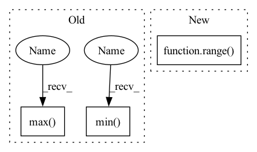

Pattern ID :13551
Before Change
signal_length = signal.shape[0]
time = np.linspace(0, signal_length, signal_length)
y_max, y_min = signal.max() + 0.1, signal.min() - 0.1
norm_w = (weights - weights.min(0)) / (weights.max(0) - weights.min(0))
leading = weights.argmax(-1)
w = (leading + norm_w.max(-1))[np.newaxis]After Change
interpolation="bilinear")
// impose modalities on the background in corresponding colormaps
for i in range( n_mod) :
y = modalities[i] // modality signals
c = colormaps[i].mean(0) // mean color for the corresponding colormap
ax.plot(t, y.squeeze(-1), linewidth=1.5, c=c)In pattern: SUPERPATTERN
Frequency: 3
Non-data size: 3
Instances Fragment ID: 45596208
Project Name: kolaszko/haptic_transformer
Commit Name: b78cf689b18ea6854d17e5ed972b867313e8c086
Time: 2021-12-02
Author: michalbednarek.e@gmail.com
File Name: utils/analysis.py
M Class Name: AnonimousClass
N Class Name: AnonimousClass
M Method Name: impose(3)
N Method Name: impose(2)
M Parent Class:
N Parent Class:
M File Name: utils/analysis.py
N File Name: utils/analysis.py
M Start Line: 28
M End Line: 49
N Start Line: 18
N End Line: 58
Before Change
else:
x_range = (
min(dist.min() , dist.min()),
max(dist.max(), dist.max() )
)
// Heuristically take points on x-axis to show on the plotAfter Change
xs = sorted(np.unique(dist))
if len(xs) > 50:
// If there are too many values, we take only 50, using a constant interval between them:
xs = list(range( int(xs[0]), int(xs[-1]) + 1, int((xs[-1] - xs[0]) // 50)) )
else:
// Heuristically take points on x-axis to show on the plot
// The intuition is the graph will look "smooth" wherever we will zoom it Fragment ID: 45596207
Project Name: deepchecks/deepchecks
Commit Name: 0bd8be4792b38c96daa3fdb0c303db46fe3d49ef
Time: 2023-04-02
Author: 92314933+nirhutnik@users.noreply.github.com
File Name: deepchecks/nlp/utils/nlp_plot.py
M Class Name: AnonimousClass
N Class Name: AnonimousClass
M Method Name: get_text_outliers_graph(6)
N Method Name: get_text_outliers_graph(6)
M Parent Class:
N Parent Class:
M File Name: deepchecks/nlp/utils/nlp_plot.py
N File Name: deepchecks/nlp/utils/nlp_plot.py
M Start Line: 113
M End Line: 123
N Start Line: 123
N End Line: 141
Before Change
)
B, C, H, W = gcam.shape
gcam = gcam.view(B, -1)
gcam -= gcam.min(dim=1, keepdim=True) [0]
gcam /= gcam.max(dim=1, keepdim=True) [0]
gcam = gcam.view(B, C, H, W)
return gcamAfter Change
if target_layer == "auto":
fmaps, weights = self.select_highest_layer()
gcam = []
for i in range( self.logits.shape[0]) :
gcam.append(self.generate_helper(fmaps[i].unsqueeze(0), weights[i].unsqueeze(0)))
else:
fmaps = self._find(self.fmap_pool, target_layer) Fragment ID: 45596206
Project Name: karol-g/gcam
Commit Name: 4d3673129f7f35d0b6ea05944a037268b4da45b2
Time: 2020-01-02
Author: KarolGotkowski@gmx.de
File Name: evaluation_models/grad_cam/grad_cam.py
M Class Name: GradCAM
N Class Name: GradCAM
M Method Name: generate(2)
N Method Name: generate(2)
M Parent Class: _BaseWrapper
N Parent Class: _BaseWrapper
M File Name: evaluation_models/grad_cam/grad_cam.py
N File Name: evaluation_models/grad_cam/grad_cam.py
M Start Line: 209
M End Line: 228
N Start Line: 231
N End Line: 244